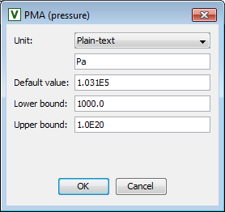
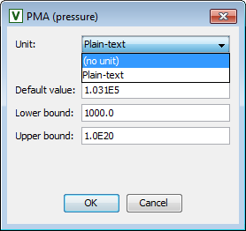
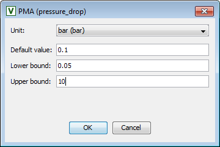
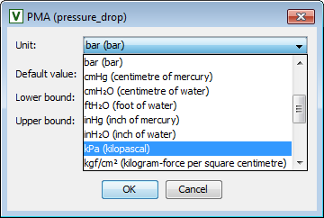

Step 1
The first step is to specify, from the full set of Parameters, Variables and Selectors declared by the Model (the Model symbols), a sub-set which shall be exported as Public Model Attributes (PMA). These are essentially those that will appear on a Specification dialog or on a Model report.
When compared against other Model symbols, Public Model Attributes have the following additional information:
It is still possible for a user to provide a value outside these bounds but the value is highlighted with a red box and an error message appears.
For Variables, it is anticipated that these bounds would be much tighter than those provided by its Variable Type which are usually relatively loose.
To define the Public Model Attributes:
Select the Public Model Attributes from the Model symbols pane by clicking on the check box to select the desired Model attribute. All the checked symbols will appear in the Public Model Attributes table.
The default value, the lower bound, the upper bound and the units for the PMA are entered in a separate dialog that appears when choosing the “Edit...” button or double-clicking on a row, see below.
Note that the bounds and units are only meaningful if the attribute is a Parameter or a Variable. If not specified here, the bounds for PMA Variables are taken from their Variable Types but they can be further refined to bounds that prevent the Model being used in operating regions for which it is invalid.
The PMA's name, description and the width of its value field and the alignment for this field are specified in a separate pane and are accessed by selecting the PMA in the PMA table.
As can be seen in the image above, Initialisation Procedures can be included in a Public Model Interface. A name and description can be
given for the Initialisation Procedure and the default value must be set to DEFAULT. At present, the Model user will only
have the option of selecting whether or not Initialisation Procedures are used; if they are to be used, they must be the default Initialisation
Procedure. Non-default Initialisation Procedures must be specified using the gPROMS language tab of the Process.
A PMA that references Variable Types with plain-text units can only define which string to display or if nothing is to be displayed at all.
 
Declaring PMA with plain-text units of measurement
If configurable units of measurement are enabled and the Variable Type of the PMA is specified accordingly with a reference unit, a choice of units, compatible with the physical quantity type, become available. The model developer can choose which one is the default that is presented to the end user in model specification dialogs.
Note: All required conversions, from displayed units into the internal reference units, happen automatically and require neither end user nor model developer intervention.
 
Declaring PMA with selectable units of measurement